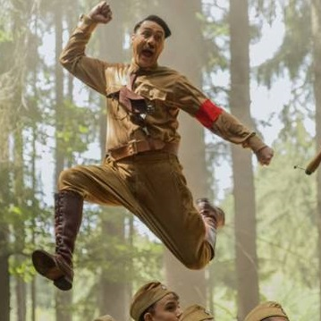

Death Note | Donald Trump quer comprar caderno de Ryuk em novo mangá
Com 88 páginas, novo capítulo de Death Note foi publicado no Japão
Bad Boys para Sempre estreia no topo da bilheteria brasileira
Filme desbancou Jumanji - Próxima Fase
Falcão e Soldado Invernal | Sebastian Stan publica foto da série
Sam Wilson e Bucky Barnes juntos na imagem da nova série do MCU
Loki | O que já sabemos sobre a série do personagem no Disney+
Atração é uma das mais aguardas do novo serviço de streaming
Democracia em Vertigem
Indicado ao Oscar, documentário se contenta com a aposta na perplexidade
Cozinha Nerd: filmes românticos que odiamos e amamos
Confira o programa do Omelete que mistura comida e nerdices

Oscar Explicado | Por que Jojo Rabbit merece se destacar
Nova série original do Omelete te ajuda a entender as categorias técnicas da premiação